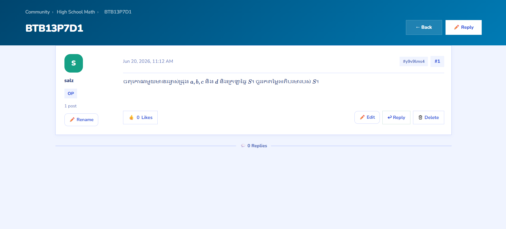
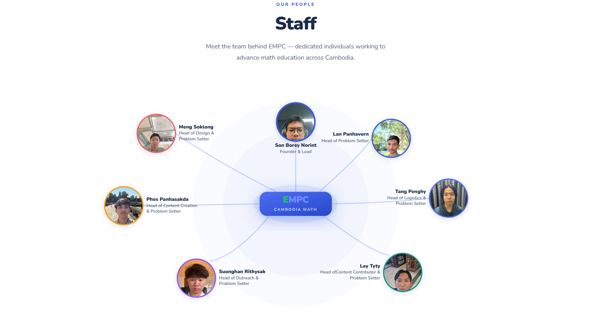

01

01 / Discussion
Problem discussions
Students can open an individual mathematics problem, share a solution, reply to other users, and continue the discussion in one focused space.
Project 01 / Math · Web
A collection of challenging mathematics problems created for advanced learners who want to develop stronger problem-solving skills inspired by Art Of Problem Solving.
Field
Mathematics and web
Role
Founder, Head of developer and lead
Status
Version 1.0
This project brings difficult mathematics problems together in one focused digital collection.
The goal is to make advanced practice easier to explore while presenting each problem in a clear, approachable format.
From the platform to the people behind it
01 / Discussion
Students can open an individual mathematics problem, share a solution, reply to other users, and continue the discussion in one focused space.

02 / Library
The platform separates middle-school and high-school material, helping learners quickly find national, regional, and Olympiad problems at the right level.

03 / Collections
Focus on grade 9 and 12 national and regional past papers are grouped into clear yearly collections, making a large archive easier to browse and maintain.

04 / Competitions
National and regional competitions have their own collection, giving students direct access to past contest material across many years. We also planned to have international competitions translated into Khmer for much more easy use and allow Cambodian student to get access to muuch more better quality of problems.

05 / Team
EMPC is supported by people working across design, problem setting, content, outreach, and logistics to advance mathematics education in Cambodia.

06 / Project evidence
Further project evidence shows how E-Math continues to develop as a useful space for sharing resources, solving problems, and supporting mathematics learners.